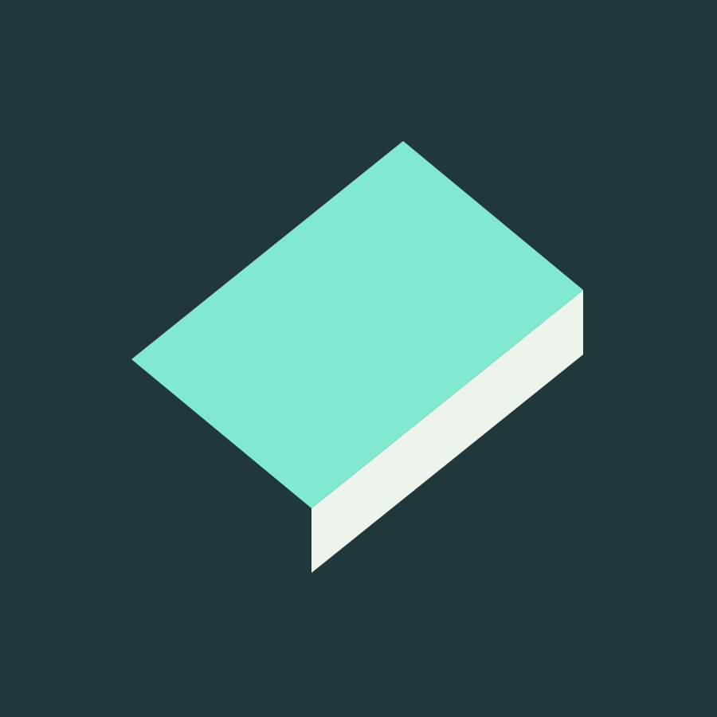
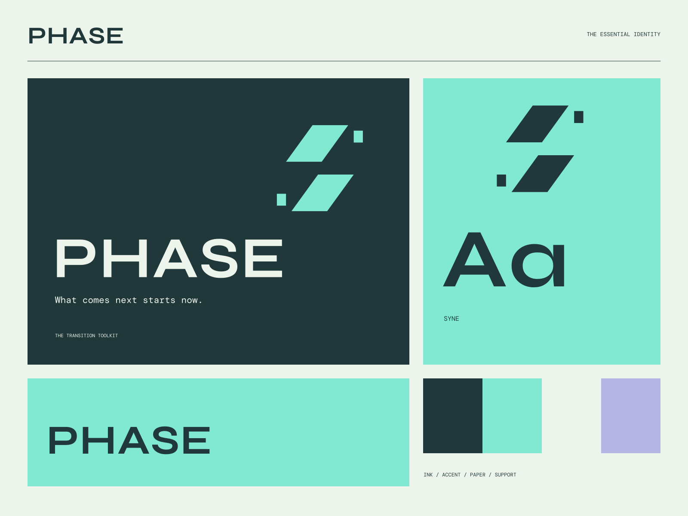

01
A clear transition
A practical structure for getting from an idea to its next version.
AN OPEN TOOLKIT FOR THE NEXT VERSION
What comes next starts now. Move the work forward.

A coherent little world
Move the work forward. What comes next starts now.
01
A practical structure for getting from an idea to its next version.
02
Useful primitives and fewer unnecessary choices.
03
A foundation that supports iteration rather than getting in its way.

The point of view
Slashed planes, folded technical ribbons, progression diagrams, and a sharp sea-green terminal palette. Progress has a visible direction and a clear structure.